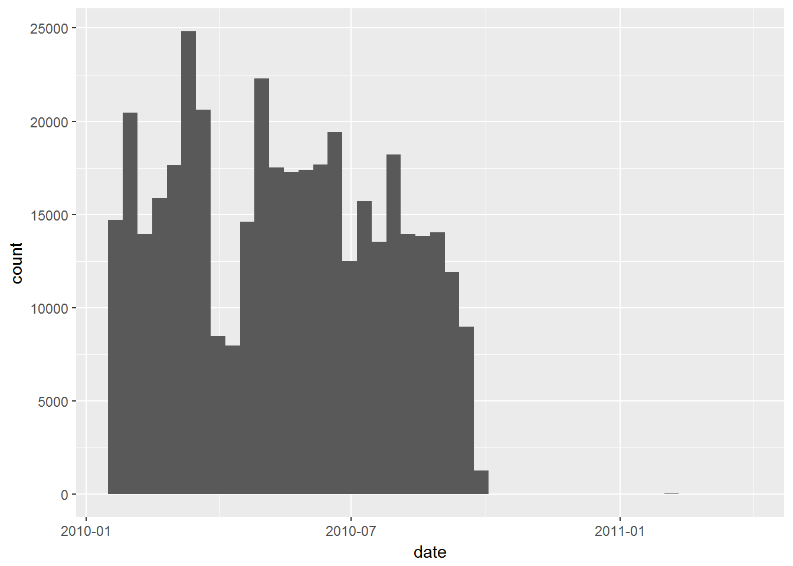
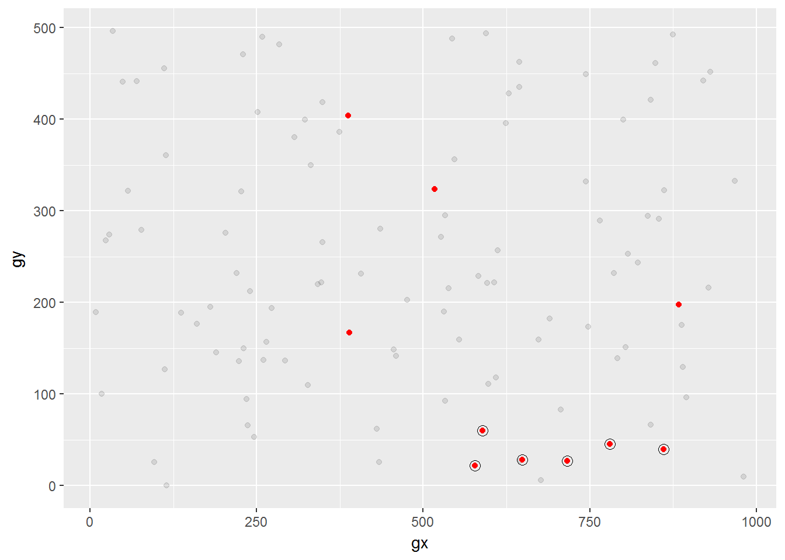

Exploratory Data Analysis
Mauro Lepore
2017-06-16
Introduction
This vignette will show you how to explore your data systematically, using visualization and transformation. The goal is to use your data and some research questions to learn something that you can then use to refine your questions. You should repeat the process until you are happy with what you learned.
We will use data from Barro Colorado Island (DOI: https://doi.org/10.5479/data.bci.20130603), and functions from the packages forestr, dplyr and ggplot2.
# To install packages see ?install.packages and ?devtools::install_github
library(bci) # to access data of forest dynamics from BCI
library(forestr) # to analyse forest dynamics
library(ggplot2) # to visualize data
library(dplyr) # to transform data
#>
#> Attaching package: 'dplyr'
#> The following objects are masked from 'package:stats':
#>
#> filter, lag
#> The following objects are masked from 'package:base':
#>
#> intersect, setdiff, setequal, union
library(tibble) # to handle large data easierR for Data Science
The ideas presented here come from Exploratory Data Analysis, in R for Data Science, by Garrett Grolemund and Hadley Wickham. Some text from that book section is literally reproduced here like this or
like this,
but not like this (compared to the text above, this one has different indentation and fonttype).For example, the following definitions are literally reproduced:
A variable is a quantity, quality, or property that you can measure.
A value is the state of a variable when you measure it. The value of a variable may change from measurement to measurement.
An observation is a set of measurements made under similar conditions (you usually make all of the measurements in an observation at the same time and on the same object). An observation will contain several values, each associated with a different variable. I’ll sometimes refer to an observation as a data point.
Tabular data is a set of values, each associated with a variable and an observation. Tabular data is tidy if each value is placed in its own “cell”, each variable in its own column, and each observation in its own row.
Questions
To start exploring your data, you can generally ask:
What type of variation occurs within my variables?
What type of covariation occurs between my variables?
Variation
Variation is the tendency of the values of a variable to change from measurement to measurement.
Every variable varies with a particular pattern, and that pattern may be insightful. To understand the variation pattern of a variable we can visualize the distribution of the variables’ values. The best way to visualize a variable’s distribution depends on whether the variable is categorical or continuous.
The BCI data has both, categorical and continuous variables, for example, most variables of type
seven <- bci12full7 # give the data a clearer and more memorable name
# Tibbles print better than dataframes
seven <- as_tibble(seven)
seven
#> # A tibble: 394,658 x 20
#> treeID stemID tag StemTag sp quadrat gx gy MeasureID
#> * <int> <int> <chr> <chr> <chr> <chr> <dbl> <dbl> <int>
#> 1 1 NA -05599 <NA> swars1 4007 800.2 152.2 NA
#> 2 2 NA -22851 <NA> hybapr 0718 151.5 378.8 NA
#> 3 3 NA -24362 <NA> aegipa 0417 95.2 357.5 NA
#> 4 4 NA -26589 <NA> beilpe 0007 11.7 151.1 NA
#> 5 5 NA -26590 <NA> faraoc 0004 7.7 96.2 NA
#> 6 6 NA -26703 <NA> hybapr 0210 50.1 215.4 NA
#> 7 7 NA -26746 <NA> tet2pa 0218 58.5 364.7 NA
#> 8 8 NA -27125 <NA> des2pa 0613 139.8 267.1 NA
#> 9 9 NA -27298 <NA> crotbi 0704 157.8 86.4 NA
#> 10 10 NA -27784 <NA> alsebl NA NA NA
#> # ... with 394,648 more rows, and 11 more variables: CensusID <int>,
#> # dbh <dbl>, pom <chr>, hom <dbl>, ExactDate <chr>, DFstatus <chr>,
#> # codes <chr>, nostems <dbl>, date <dbl>, status <chr>, agb <dbl>
# Another view; like str() but shows as much data as possible
glimpse(seven)
#> Observations: 394,658
#> Variables: 20
#> $ treeID <int> 1, 2, 3, 4, 5, 6, 7, 8, 9, 10, 11, 12, 13, 14, 15, 1...
#> $ stemID <int> NA, NA, NA, NA, NA, NA, NA, NA, NA, NA, NA, NA, NA, ...
#> $ tag <chr> "-05599", "-22851", "-24362", "-26589", "-26590", "-...
#> $ StemTag <chr> NA, NA, NA, NA, NA, NA, NA, NA, NA, NA, NA, NA, NA, ...
#> $ sp <chr> "swars1", "hybapr", "aegipa", "beilpe", "faraoc", "h...
#> $ quadrat <chr> "4007", "0718", "0417", "0007", "0004", "0210", "021...
#> $ gx <dbl> 800.2, 151.5, 95.2, 11.7, 7.7, 50.1, 58.5, 139.8, 15...
#> $ gy <dbl> 152.2, 378.8, 357.5, 151.1, 96.2, 215.4, 364.7, 267....
#> $ MeasureID <int> NA, NA, NA, NA, NA, NA, NA, NA, NA, NA, NA, NA, NA, ...
#> $ CensusID <int> NA, NA, NA, NA, NA, NA, NA, NA, NA, NA, NA, NA, NA, ...
#> $ dbh <dbl> NA, NA, NA, NA, NA, NA, NA, NA, NA, NA, NA, NA, NA, ...
#> $ pom <chr> NA, NA, NA, NA, NA, NA, NA, NA, NA, NA, NA, NA, NA, ...
#> $ hom <dbl> NA, NA, NA, NA, NA, NA, NA, NA, NA, NA, NA, NA, NA, ...
#> $ ExactDate <chr> NA, NA, NA, NA, NA, NA, NA, NA, NA, NA, NA, NA, NA, ...
#> $ DFstatus <chr> "dead", "dead", "dead", "dead", "dead", "dead", "dea...
#> $ codes <chr> NA, NA, NA, NA, NA, NA, NA, NA, NA, NA, NA, NA, NA, ...
#> $ nostems <dbl> NA, NA, NA, NA, NA, NA, NA, NA, NA, NA, NA, NA, NA, ...
#> $ date <dbl> 18465.07, 18329.00, 18316.05, 18295.61, 18288.57, 18...
#> $ status <chr> "D", "D", "D", "D", "D", "D", "D", "D", "D", "M", "D...
#> $ agb <dbl> 0.0000000, 0.0000000, 0.0000000, 0.0000000, 0.000000...Working with dates
xxx replace data for some that is easier to work with.
xxx maybe move this subsection for after the eda has been covered with easier-to-work data. Here, I may choose another variable to work with, e.g. dbh. Latter, this section’s purpose would be to show how to deal with dates. For this, I could follow the lubridate section of r4ds.
The variable date is the number of days since 1960-01-01 (see data dictionary at https://goo.gl/Q6XYrb), but it will be easier to interpret if we convert it to a date-time object (see ?lubridate::as_datetime).
library(lubridate)
#>
#> Attaching package: 'lubridate'
#> The following object is masked from 'package:base':
#>
#> date
# "Duration" is a useful intermediate; learn more with ?lubridate::duration
# %/%: integere diviison removes useless and annoying fraction of seconds.
seven <- mutate(seven, duration = dseconds((date * 24 * 60 * 60) %/% 1))
seven <- mutate(seven, datetime = as_datetime(duration, origin = "1960-01-01"))
seven %>%
select(date, datetime) %>%
print(n = 20) # print some more rows than tibble's default
#> # A tibble: 394,658 x 2
#> date datetime
#> <dbl> <dttm>
#> 1 18465.07 2010-07-22 01:34:25
#> 2 18329.00 2010-03-08 00:00:00
#> 3 18316.05 2010-02-23 01:05:13
#> 4 18295.61 2010-02-02 14:42:34
#> 5 18288.57 2010-01-26 13:45:13
#> 6 18300.45 2010-02-07 10:48:56
#> 7 18319.00 2010-02-26 00:00:00
#> 8 18305.93 2010-02-12 22:16:49
#> 9 18292.02 2010-01-30 00:28:47
#> 10 NA NA
#> 11 18349.44 2010-03-28 10:27:05
#> 12 18358.00 2010-04-06 00:00:00
#> 13 18401.11 2010-05-19 02:32:24
#> 14 18386.51 2010-05-04 12:19:06
#> 15 18390.09 2010-05-08 02:13:00
#> 16 18393.11 2010-05-11 02:36:49
#> 17 18362.29 2010-04-10 07:01:07
#> 18 18528.81 2010-09-23 19:25:19
#> 19 18518.00 2010-09-13 00:00:00
#> 20 18528.81 2010-09-23 19:25:19
#> # ... with 3.946e+05 more rowsseven$date <- lubridate::as_date(seven$date, origin = "1960-01-01")
seven %>%
select(date) %>%
glimpse()
#> Observations: 394,658
#> Variables: 1
#> $ date <date> 2010-07-22, 2010-03-08, 2010-02-23, 2010-02-02, 2010-01-...Visualizing distributions
Categorical variables
A variable is categorical if it can only take one of a small set of values.
To examine the distribution of a categorical variable, use a bar chart.
ggplot(seven) +
geom_bar(aes(x = DFstatus))
Values distribution of the categorical variable status
You can compute the same count manually with dplyr::count():
count(seven, DFstatus)
#> # A tibble: 3 x 2
#> DFstatus n
#> <chr> <int>
#> 1 alive 221758
#> 2 dead 172848
#> 3 no_record 52Continuous variables
A variable is continuous if it can take any of an infinite set of ordered values.
To examine the distribution of a continuous variable use a histogram.
barwidth <- 10 # set once, then use multiple times
ggplot(seven) +
geom_histogram(aes(x = date), binwidth = barwidth)
#> Warning: Removed 52 rows containing non-finite values (stat_bin).
You can compute the same count manually, by cutting the variable with ggplot2::cut_width() and then counting the unique pieces with dplyr::count():
seven %>%
mutate(date = cut_width(date, width = barwidth)) %>%
count(date) %>%
tail()
#> # A tibble: 6 x 2
#> date n
#> <fctr> <int>
#> 1 (14855,14865] 11934
#> 2 (14865,14875] 8984
#> 3 (14875,14885] 1249
#> 4 (15005,15015] 22
#> 5 (15055,15065] 11
#> 6 NA 52The 52 NA indicate dates where no trees where recorded (notice DF status = "no_record" on the bar chart above). The same we see from a histogram with narrower bars.
ggplot(seven) +
geom_histogram(aes(x = date), binwidth = 1)
#> Warning: Removed 52 rows containing non-finite values (stat_bin).
You should always explore a variety of binwidths when working with histograms, as different binwidths can reveal different patterns.
To overlay multiple histograms in the same plot, geom_freqpoly() may produce clearer plots than geom_histogram() because it is easier to understand overlying lines than bars:
ggplot(seven) +
geom_freqpoly(aes(x = date, color = DFstatus), binwidth = barwidth)
#> Warning: Removed 52 rows containing non-finite values (stat_bin).Lines overlaid are easier to understand than bars.
Typical values
In both bar charts and histograms, tall and short bars let us explore common and less-common values. Now we can ask:
- Which values are the most common? Why?
- Which values are rare? Why? Does that match your expectations?
- Can you see any unusual patterns? What might explain them?
ggplot(seven) +
geom_histogram(aes(x = dbh), binwidth = 50)
#> Warning: Removed 187399 rows containing non-finite values (stat_bin).
xxxcont.
Leftovers
skimr
library(skimr) # xxx remove or declare in DESCRIPTION in Suggest:
skim(seven) %>% filter(stat == "hist") %>% as.matrix()
#> Warning: Skim does not know how to summarize of vector of class: Duration.
#> Coercing to numeric
#> var type stat level value
#> [1,] "treeID" "integer" "hist" "<U+2587><U+2587><U+2587><U+2587><U+2587><U+2587><U+2587><U+2585><U+2581><U+2585>" "0"
#> [2,] "stemID" "integer" "hist" "<U+2587><U+2581><U+2581><U+2581><U+2581><U+2581><U+2581><U+2581><U+2581><U+2581>" "0"
#> [3,] "gx" "numeric" "hist" "<U+2587><U+2587><U+2587><U+2587><U+2587><U+2587><U+2587><U+2587><U+2587><U+2587>" "0"
#> [4,] "gy" "numeric" "hist" "<U+2587><U+2587><U+2587><U+2587><U+2587><U+2587><U+2587><U+2587><U+2587><U+2587>" "0"
#> [5,] "MeasureID" "integer" "hist" "<U+2587><U+2587><U+2587><U+2587><U+2587><U+2587><U+2587><U+2587><U+2587><U+2587>" "0"
#> [6,] "CensusID" "integer" "hist" "<U+2581><U+2581><U+2581><U+2581><U+2587><U+2581><U+2581><U+2581><U+2581><U+2581>" "0"
#> [7,] "dbh" "numeric" "hist" "<U+2587><U+2581><U+2581><U+2581><U+2581><U+2581><U+2581><U+2581><U+2581><U+2581>" "0"
#> [8,] "hom" "numeric" "hist" "<U+2587><U+2581><U+2581><U+2581><U+2581><U+2581><U+2581><U+2581><U+2581><U+2581>" "0"
#> [9,] "nostems" "numeric" "hist" "<U+2587><U+2581><U+2581><U+2581><U+2581><U+2581><U+2581><U+2581><U+2581><U+2581>" "0"
#> [10,] "agb" "numeric" "hist" "<U+2587><U+2581><U+2581><U+2581><U+2581><U+2581><U+2581><U+2581><U+2581><U+2581>" "0"
#> [11,] "duration" "numeric" "hist" "<U+2587><U+2587><U+2587><U+2587><U+2586><U+2583><U+2581><U+2581><U+2581><U+2581>" "0"To do all of the above quickly, we can use package skimr (https://github.com/ropenscilabs/skimr).
library(skimr)
smry <- skim(diamonds)
smry %>%
dplyr::filter(stat == "hist") %>%
as.matrix() # Only needed in Windows for histograms (https://goo.gl/S8MaZW)tibble conflicts
# xxx turn this off because the data type changes
# Handle and print large data nicely *xxx
# library(tibble)
# bci12full7 <- tibble::as_tibble(bci12full7)
# *xxx Note: If you get this error message:
# "Can't use matrix or array for column indexing"
# watch for problematic interaction with legacy code (https://goo.gl/g7rg2P)
# and try solve it by with as.data.frame().